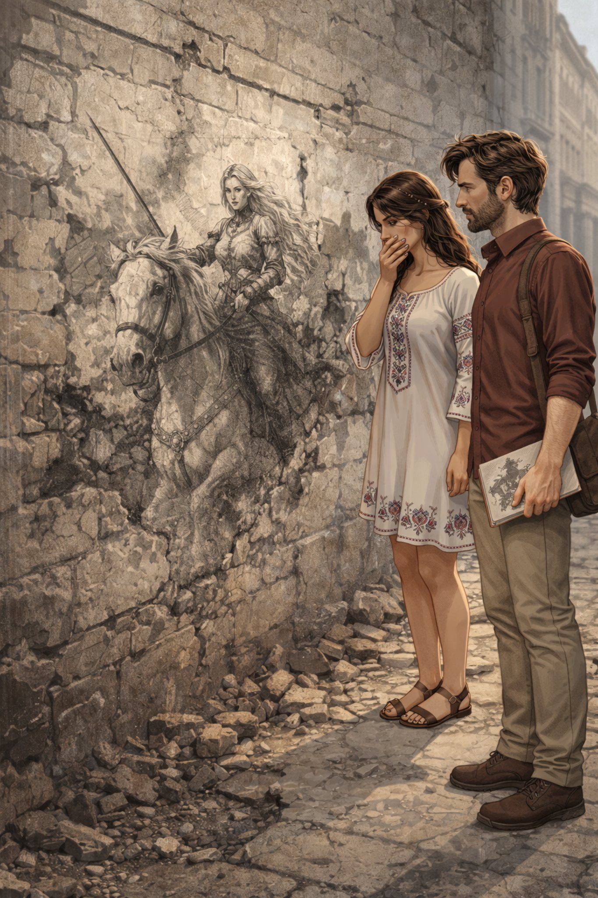

Поглавље 9: Тајна страница
Página individual del capítulo con lectura y ejercicios.

Наташа и Луис су у Националној библиотеци Србије. Наташа проналази стари рукопис на српском језику. Она пажљиво чита текст.
"Луис, слушај ovo," каже Наташа. "Овде пише о Часу дивљака. Час дивљака је магични тренутак када град губи контролу. Људи постају дивљи и град се мења. То се дешава сваке хиљаду година."
Луис жели да фотографише рукопис. Он узима телефон и почиње да слика. Одједном, библиотекар прилази.
"Извините, али фотографисање рукописа је забрањено," каже библиотекар.
Луис не разуме потпуно, али схвата да не сме да фотографише. Наташа му шапће: "Питај га нешто о Библији."
Луис се осмехне и пита библиотекара: "Да ли имате старе Библије?"
Библиотекар почиње да објашњава, а Луис га слуша, иако не разуме све. Док Луис разговара са библиотекаром, Наташа пажљиво кида страницу из рукописа и сакрива је.
Када излазе из библиотеке, Наташа показује Луису страницу и смеје се. "Ево je!"
Луис је изненађен. "Наташа, украла си je!"
Наташа се смеје. "Морали смо. Ово je важно."
Они одлазе у кафић и седају. Наташа пажљиво чита страницу.
"Овде пише више о Часу дивљака," каже Наташа. "Час дивљака je магични тренутак када се отварају портали између света. Људи губе контролу и град постаје место хаоса. Али постоји начин да се заустави."
Луис пита: "Како?"
Наташа чита даље. "Морамо наћи магично камење које je расуто по граду. Камење je кључ за контролу Часа дивљака. Ако сакупимо сва камења, можемо зауставити хаос."
Луис je забринут. "Али како ћемо их наћи?"
Наташа каже: "Морамо бити пажљиви. Софија je већ почела да их сакупља. Морамо је зауставити."
Луис гледа Наташу. "Ово je озбиљно. Морамо деловати брзо."
Наташа кима. "Идемо. Београд зависи од нас."
Крај деветог поглавља.